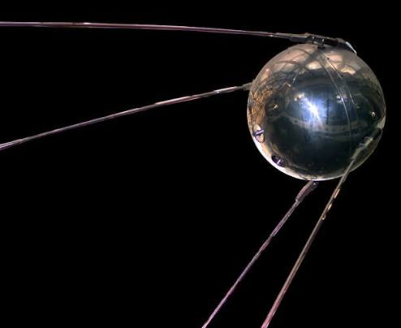
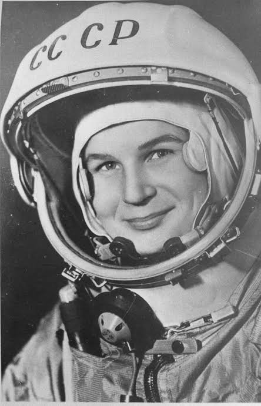
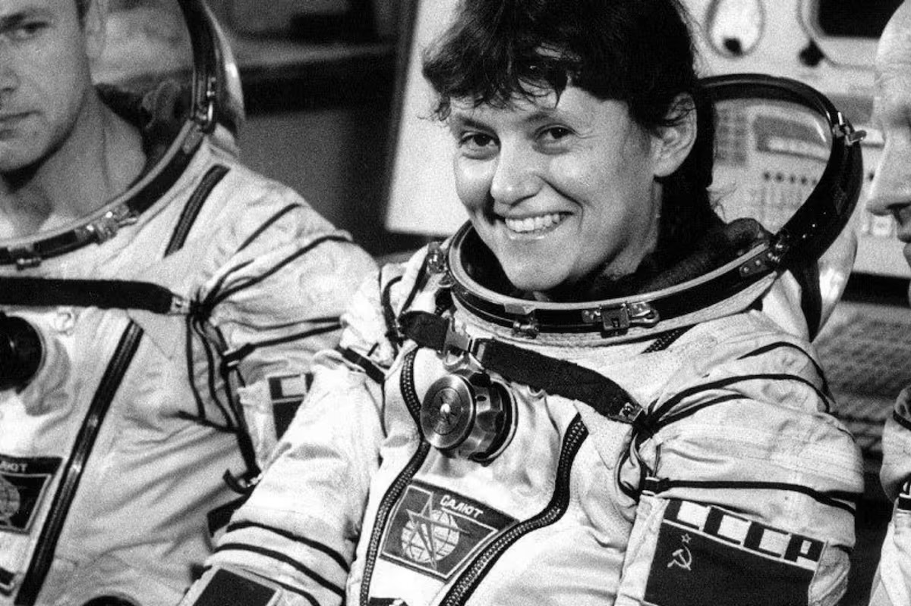
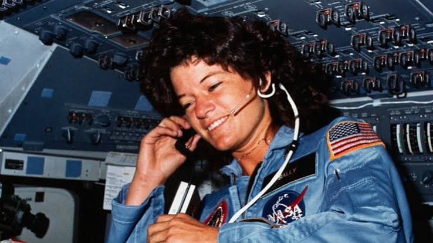
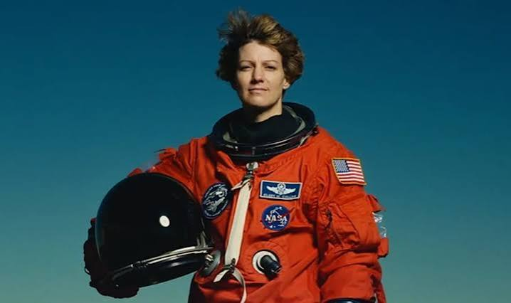
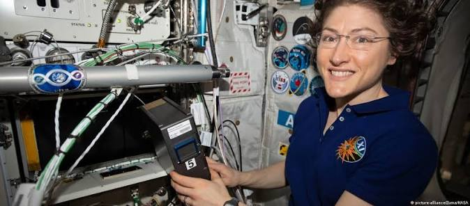
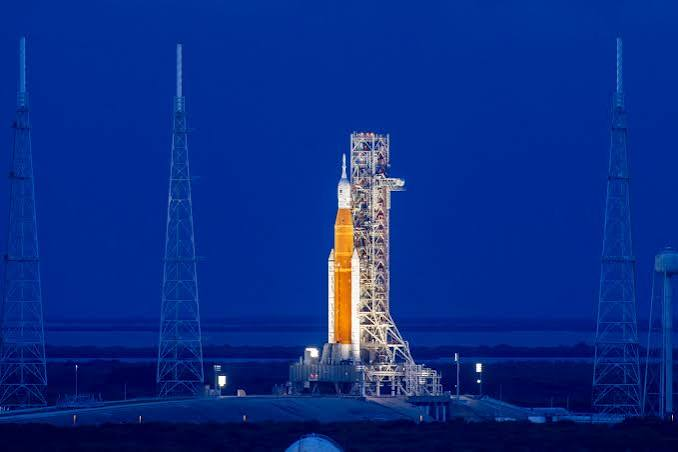

01 · Contexto histórico
La Guerra Fría
y la carrera espacial
¿Qué estaba pasando en el mundo? ¿Por qué importaba el espacio dentro del enfrentamiento entre EE.UU. y la URSS?
Entre 1947 y 1991 el mundo vivió la Guerra Fría: un enfrentamiento entre dos superpotencias —Estados Unidos y la Unión Soviética— que no se libró con balas, sino con tecnología, propaganda e ideología. El espacio se convirtió en uno de los escenarios más visibles de esa rivalidad.
El 4 de octubre de 1957 la URSS lanzó el Sputnik 1, el primer satélite artificial de la historia. El cohete que lo elevó era también el primer misil balístico intercontinental nuclear: la misma tecnología servía para explorar el cosmos y para amenazar al adversario. El presidente Eisenhower creó la NASA al año siguiente.
El 12 de abril de 1961 el cosmonauta Yuri Gagarin se convirtió en el primer ser humano en viajar al espacio. La respuesta estadounidense llegó con el programa Mercury y la promesa del presidente Kennedy: llegar a la Luna antes de que terminara la década.
En ese contexto, cada "primera vez" espacial equivalía a demostrar la superioridad de un sistema político. Ser la primera nación en enviar a una mujer al espacio no era solo un logro científico: era propaganda global.

Sputnik 1 · 4 octubre 1957 · primer satélite artificial de la historia
Yuri Gagarin · 12 abril 1961 · primera órbita terrestre en 108 minutos
Cronología de la carrera espacial
1957
Sputnik 1 — URSS
Primer satélite artificial. El lanzador R-7 era también el primer misil balístico intercontinental nuclear.
1961
Yuri Gagarin — primer ser humano en el espacio
12 de abril: 108 minutos, una órbita. Kennedy promete la Luna antes de fin de la década.
1963
Valentina Tereshkova — primera mujer en el espacio
Vostok 6 · 16–19 junio · 48 órbitas · ~71 horas. Propaganda y hito real al mismo tiempo.
1969
Apollo 11 — EE.UU. llega a la Luna
20 de julio. Los 12 astronautas que caminaron sobre la Luna fueron todos hombres.
1991
Fin de la Guerra Fría
Disolución de la URSS. La carrera espacial cede paso a la cooperación internacional.
La carrera espacial en imágenes
Documental BBC: The Space Race — la rivalidad soviético-estadounidense (1957–1969)
02 · El hecho o proceso
Las pioneras
¿Qué ocurrió? ¿Quiénes participaron? ¿Cómo se desarrolló cada misión?
Seleccioná una pionera para ver su historia completa

Valentina Tereshkova
🇷🇺 URSS · Vostok 6 · 16–19 jun 1963
1ª mujer en el espacio
Svetlana Savitskaya
🇷🇺 URSS · Soyuz T-7 / T-12 · 1982–84
1ª caminata espacial femenina
Sally Ride
🇺🇸 EE.UU. · Challenger STS-7 · 18 jun 1983
1ª astronauta estadounidense
Eileen Collins
🇺🇸 EE.UU. · STS-63 / STS-93 · 1995–1999
1ª piloto y comandante03 · Una fuente histórica
Las voces del momento
¿Qué dicen las fuentes primarias y secundarias sobre cómo se vivió el vuelo de Tereshkova en 1963?
"La burguesía siempre afirma que las mujeres son el sexo débil. Ahora aquí pueden ver a una típica mujer soviética que, a ojos de la burguesía, es débil. ¡Miren lo que les ha mostrado a los astronautas de Estados Unidos! ¡Les ha mostrado quién es quién!"
— Nikita Jruschov, Primer Ministro de la URSS, junio de 1963
¿Por qué elegimos esta fuente? Condensa en pocas palabras la tesis central: el vuelo fue simultáneamente un logro real y un instrumento de propaganda. Es una fuente primaria porque proviene directamente del gobernante soviético en el momento del hecho. Al mismo tiempo revela contradicciones: el mismo Jruschov usó el término diminutivo "chica" (девушка) en otras alocuciones, y la prensa oficial presentó a Tereshkova destacando rasgos convencionalmente femeninos. La igualdad proclamada tenía límites.
"¡Eh, cielo, quítate el sombrero, que allá voy!"
— Valentina Tereshkova, al despegar en la Vostok 6, 16 de junio de 1963 · verso adaptado del poeta Vladímir Mayakovski
Al citar al poeta revolucionario Mayakovski, Tereshkova inscribía su hazaña dentro del imaginario soviético, conectando conquista espacial con poesía y revolución. Esta frase es una fuente primaria de primer orden: revela la dimensión emocional y cultural del vuelo.
Los titulares de la prensa occidental permiten analizar cómo se recibió el hecho fuera de la URSS:
Springfield Union · Massachusetts · 17 jun 1963
SOVIET ORBITS FIRST COSMONETTE
Chicago Tribune · 18 jun 1963
Russian Blonde in Space
El término inventado "cosmonette" y el énfasis en el aspecto físico muestran que la prensa occidental filtró la hazaña técnica a través de estereotipos de género. Comparar estos titulares con el discurso de Jruschov permite ver que tanto la URSS como EE.UU. instrumentalizaron el género, cada una a su manera.
Imágenes del regreso de Tereshkova
Imágenes de archivo soviético del regreso de Tereshkova y su recibimiento en Moscú · 1963
04 · Impacto y consecuencias
¿Qué cambió
después?
¿Cómo reaccionó el mundo? ¿Qué significó para la Guerra Fría y para los derechos de la mujer?
19
años hasta que la URSS volvió a enviar una mujer al espacio (Savitskaya, 1982)
20
años hasta la primera astronauta de EE.UU. (Sally Ride, 1983)
1.381
delegadas de 105 países en el Congreso Mundial de Mujeres, Moscú, junio 1963
0
mujeres entre los 12 astronautas que pisaron la Luna, 1969–1972
Para la Guerra Fría y la propaganda
El vuelo fue un triunfo propagandístico inmediato. Días después, Tereshkova fue exhibida en el Congreso Mundial de Mujeres de Moscú como prueba de la igualdad soviética. Se convirtió en embajadora cultural: miembro del Soviet Supremo (1966) y oradora ante la UNESCO. Los archivos soviéticos conservan cientos de cartas de mujeres de todo el mundo que vieron en "Gaviota" un símbolo de sus propias aspiraciones.
Para los derechos de la mujer
El impacto fue ambivalente. Por un lado, inspiró a mujeres de todo el mundo. Por otro, la URSS no volvió a enviar una mujer durante 19 años. En EE.UU., las Mercury 13 —13 mujeres piloto que pasaron las mismas pruebas que los astronautas, superándolos en algunas— fueron rechazadas por el Congreso porque la NASA exigía ser piloto militar de pruebas, profesión vetada a las mujeres.
El caso de las Mercury 13
En 1960, el médico Randy Lovelace reclutó a 13 mujeres piloto que superaron pruebas físicas equivalentes a las de los astronautas. Jerrie Cobb se ubicó en el tercio superior de todos los candidatos. Una audiencia del Congreso (1962) confirmó su exclusión. El astronauta John Glenn declaró ante el Congreso que las mujeres "simplemente no eran pilotos de pruebas militares".
Barreras institucionales en EE.UU.
La exclusión de las mujeres de la aviación militar era política sistémica. Solo en 1978, impulsada por el movimiento feminista, la NASA admitió a seis mujeres entre 35 seleccionados. Una de ellas, Sally Ride, volaría en 1983. El camino desde Tereshkova hasta Ride no fue lineal: fue una lucha.
Cápsula Vostok 6 · Tereshkova en órbita · 48 vueltas a la Tierra en ~71 horas
Jerrie Cobb · Mercury 13 · prueba de aislamiento sensorial · ca. 1960 · pasó las mismas pruebas que los astronautas
05 · Conexión con el presente
Del Vostok 6
a la era Artemis
¿Qué tiene que ver el vuelo de Tereshkova con el mundo de hoy? La brecha persiste, pero también se están rompiendo barreras inéditas.
12%
de todos los viajeros espaciales de la historia han sido mujeres (2020)
31%
de investigadoras en ciencia en el mundo (UNESCO, 2022)
328
días seguidos en el espacio: récord de Christina Koch (feb 2020)
0
mujeres asignadas al primer alunizaje Artemis hasta 2026
El programa Artemis y la promesa pendiente
Ninguna mujer ha pisado todavía la Luna. Los 12 astronautas que caminaron sobre su superficie entre 1969 y 1972 fueron todos hombres. El programa Artemis de la NASA nació con el objetivo de llevar a "la primera mujer y la primera persona de color" a la superficie lunar.
En 2026, la misión Artemis II sobrevoló la Luna con Christina Koch a bordo —primera mujer en viajar más allá de la órbita terrestre baja— fijando el récord de distancia recorrida: 406.771 km. Sin embargo, el primer alunizaje fue trasladado a Artemis IV (≈2028) y la tripulación de Artemis III es íntegramente masculina. La promesa sigue siendo una promesa.
El paralelismo con 1963 es inquietante: otra vez un programa espacial anuncia "la primera mujer" como objetivo futuro mientras la historia avanza más lento de lo prometido.

Christina Koch · actividad extravehicular · ISS · octubre 2019 · récord de permanencia femenina en el espacio

Lanzamiento del cohete SLS — misión Artemis I · 16 noviembre 2022
La brecha de género en STEM persiste
Según el informe de la UNESCO Status and Trends of Women in Science (2025), las mujeres representaban solo el 31,1% de los investigadores del mundo en 2022 —avance mínimo desde el 29,4% de 2012. Alrededor del 35% de las graduadas en STEM son mujeres, cifra estancada durante una década.
Más de un tercio de las mujeres científicas encuestadas señaló el sexismo, el acoso o la violencia de género como principales obstáculos. Igual que en 1963, cuando a Tereshkova se la juzgó con un rasero diferente al de sus colegas varones, las barreras siguen siendo sociales, no biológicas.
Tereshkova, Savitskaya, Ride y Collins demuestran que el talento no tiene género. Los límites los pone la sociedad, no la biología.
💭 Reflexión
El vuelo de Tereshkova demostró que las mujeres podían ir al espacio —pero no logró que fueran en igualdad de condiciones. Más de seis décadas después, seguimos debatiendo lo mismo: no si las mujeres pueden, sino por qué siguen siendo minoría. Mientras el programa Artemis promete llevar a "la primera mujer a la Luna", la pregunta que Tereshkova nos lega sigue vigente: ¿cuándo va a dejar de ser noticia que una mujer haga lo mismo que hacen los hombres?
El legado de las pioneras hoy
Women of Space — NASA: historia y presente de las mujeres en la astronáutica
Fuentes consultadas
— 12 referencias · clic para verFuentes primarias (documentos y testimonios de época), secundarias (libros, artículos académicos e informes institucionales) y audiovisuales.
Fuente primaria
Discurso de Jruschov sobre la Vostok 6 · 1963
Archivo TASS / Congreso Mundial de Mujeres, Moscú. Citado en Rosholt, R. (1966). An Administrative History of NASA. NASA SP-4101.
Fuente primaria
Tereshkova, V. · Memorias y entrevistas · 1963–2023
BBC entrevista 50° aniversario (2013); testimonio ante UNESCO (1966); relato del error Vostok 6. Publicados por Roscosmos.
Fuente secundaria
Burgess, C. & Hall, R. · The First Soviet Cosmonaut Team · 2009
Springer-Praxis Books. Selección y entrenamiento de cosmonautas soviéticas; contexto de la misión Vostok 6.
Fuente secundaria
Garber, S. & Launius, R. · A Brief History of NASA · 2005
NASA History Office. Mercury 13, selección de astronautas 1978, misión STS-7. history.nasa.gov
Fuente secundaria
Ackmann, M. · The Mercury 13 · 2003
Random House. Programa de entrenamiento femenino 1960–62 y audiencia del Congreso que negó el acceso al programa Mercury.
Fuente secundaria
UNESCO · Status and Trends of Women in Science · 2025
31,1% investigadoras (2022); 35% graduadas STEM; barreras sistémicas. unesco.org/open-access
Fuente secundaria
Ilic, M. · Tereshkova's Girls: Space Run and Women's Empowerment in the USSR · 2022
ILCML / She Thought It. Análisis crítico de la instrumentalización soviética del vuelo de Tereshkova.
Fuente secundaria
Tereshkova, V. · Address to UNESCO · Clio, Vol. 57 · 2023
Edición crítica del discurso de 1966. Cairn.info. DOI: 10.4000/clio.20847
Fuente hemerográfica
Springfield Union 17 jun 1963 / Chicago Tribune 18 jun 1963
Titulares originales. Colección digitalizada en rarenewspapers.com y archivo Chicago Tribune.
Fuente institucional
NASA · Fichas biográficas: Sally Ride & Eileen Collins · 2023
Datos oficiales de misiones STS-7 (1983) y STS-63/93 (1995/1999). jsc.nasa.gov/bios
Fuente audiovisual
BBC · The Space Race · 2005
Documental, 4 episodios. Archivos desclasificados soviéticos y estadounidenses.
Fuente secundaria
Chertok, B. · Rockets and People, Vol. 2 · 2006
NASA History Series SP-2006-4110. Memorias técnicas del ingeniero jefe soviético; versión rusa sobre el vuelo Vostok 6.